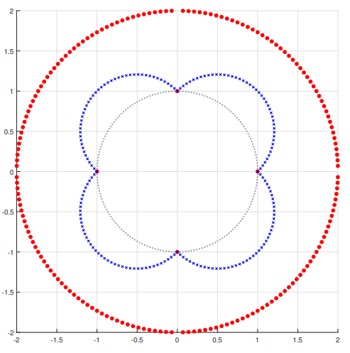

V1 V2 V3
1 0.6624031 -0.1829747 -0.5026830
2 0.3709347 1.2174531 -1.1426082
3 -1.2000343 -1.2247438 -1.6778625
4 0.5225106 0.9187241 -0.5469126
5 0.4667395 -0.8284538 -0.5829659
6 -0.2022476 -0.1169972 0.1865991Background and Intuition
Factor Models Primer
Factor models seek to distill often high dimensional data into a set of underlying or latent factors that capture much of the original variation in the data.
We say the data, \(X\), follows a factor structure if:
\[ \begin{align} \underset{(n \times 1)}{X_{t}} &= \underset{(n \times r)}{\Lambda^{*}_{\vphantom{t}}} \underset{(r \times 1)}{F_t} + \underset{(n \times 1)}{e_{t}} \forall t, \qquad \text{or more compactly,} \qquad \underset{(T \times n)}{X} = \underset{(T \times r)}{F} \underset{(r \times n)}{\Lambda^{*'}} + \underset{(T \times n)}{e} \end{align} \]
where there are
\(T\) rows (observations),
\(n\) columns (variables), and
\(r\) factors. And we can refer to
\(\lambda_{ik}\) as the entry in \(\Lambda^{*'}\) in the \(i\)th row and \(k\)th column
This \(\lambda_{ik}\) shows how factor \(k\) is related to, or “loads onto,” variable \(i\).
Note that \(r\) can be learned from the data (cite) so we can assume that \(r\) is known. Next, we’re interested in estimating a set of factors \(F\), that compress the data into fewer columns, and loadings \(\Lambda^*\), that show how the factors are related to the original columns. However, there is no unique \(F\) and \(\Lambda^*\) that satisfies the equation above. In fact, infinitely many will. This is referred to as rotational indeterminacy and it can pose issues in the interpretability of the loadings matrix.
Problem: Rotational Indeterminacy
To see the problem, let \(H\) be any nonsingular \(r \times r\) matrix. We can define \(\Lambda^0 = \Lambda^* (H^T)^{-1}\) and \(F^0 = FH\). This tells us that
\[ \begin{align} X & = F^0 \Lambda^{0'} \\ & = FH (H^{-1'})' \Lambda^{*'}\\ & = FH H^{-1} \Lambda^{*'} \\ & = F \Lambda^{*'} \end{align} \]
Hence \(X\) can be explained identically well by any “rotation” \(H\) of the loadings and factors, and each rotation provides a different interpretation of how the factors and variables are related. So how can we find the correct rotation, or interpretation?
Solution: Use Sparsity
The key idea in Freyaldenhoven (2025) is that assuming a sparsity pattern in the true loadings matrix \(\Lambda^*\) solves the issue of rotational indeterminacy since the sparsity pattern is not invariant to rotations. Intuitively, any rotation (or linear combination) of a sparse loading vector will be less sparse. In general, with PCA we can obtain estimates that are a linear combination of the true loadings vectors. That is, we can obtain principal component vectors in the columns of \(\Lambda^0\) such that
\[ \begin{align} \Lambda^0 = \Lambda^*(H^{-1})' + \epsilon \end{align} \] where \(H\) is as above.
Therefore, since \(\Lambda^0\) is a linear combination of \(\Lambda^*\), \(\Lambda^*\) is also equal to some linear combination of \(\Lambda^0\). And because linear combinations of sparse loadings are generally dense, there must be a linear combination of \(\Lambda^0\) that is sparse. We can then use this sparse linear combination of \(\Lambda^0\) as an estimator for \(\Lambda^*\).
Assuming the true loadings are sparse is fairly reasonable, particularly when we’re interested in factors that are thought to affect only a subset of the original columns (i.e., local factors). Such factors are common in economic applications.
Recovering Sparsity
Now, how do we find this sparse linear combination of loading vectors?
The steps are below:
- Take the principal components estimator as starting point to obtain \(\Lambda^0\)
- Find loadings \(\Lambda^*\) equal to the rotation of \(\Lambda^0\) that minimizes the number of non-zero elements (the \(l_0\) norm) in the loading vectors
Unfortunately, the \(l_0\) norm is infeasible to optimize over in practice. To see why, let’s examine the figure below. The distance from the origin to each red point depicts the \(l_0\) norm of points along the unit circle. The blue points depict the \(l_1\) norm and the gray points depict the \(l_2\) norm In the \(l_2\) case, these distances remain constant as we traverse the circle.

The \(l_0\) norm directly computes the number of nonzero elements, shown by the red points at (1, 0), (0, 1), (-1, 0) and (0, -1) that are each a distance of 1 away from the origin. The remaining red points are a distance of 2 away from the origin corresponding to the 2 nonzero elements in all other points along the unit circle. Since the blue and red dots coincide at the above four points, the \(l_1\) norm is minimized at the same points as the \(l_0\) norm. But the \(l_1\) norm has a much smoother descent to these minima compared with the discontinuities that occur with the red points. This smooth function is easier to traverse and optimize over.
So throughout, we’ll continue to maximize sparsity indirectly but more easily by swapping the \(l_1\) norm for the \(l_0\) norm for the optimization benefits.
Objective Function
Formally, using the \(l_1\) norm, our objective function becomes
\[ \begin{align} \min_R ||\Lambda^0R|| \end{align} \] such that \(R\) is nonsingular and \(||r_k||_2 = 1\) where \(r_k\) is a row in \(R\). This ensures we look only at rotations of each initial loading vector, keeping the length of each loading vector fixed.
Note that the above objective function can be computed and optimized separately for each loading vector individually.
A simple example
Let’s consider an example we can visualize fully: we’ll use the following simulated data that has three columns (\(n = 3\)) and suppose we know that there are two factors, \(r = 2\). Below only the first 6 of 224 total rows are printed.
Let the true loadings matrix, \(\Lambda^*\) be a matrix with 2 columns and 3 rows. As we can see there is a sparsity pattern in the matrix with the first factor affecting only the first column and the second factor affecting the second and third columns of \(X\).
loadings_1 loadings_2
1 1.024946 0.0000000
2 0.000000 1.3517553
3 0.000000 0.2765392Now, let’s look at the PCA estimator for \(X\) for the first two principal components. As we can see the zeroes from above are no longer present, but the principal component estimate still provides a great starting point as they are generally linear combinations of the true loading vectors as \(n \to \infty\) (cite).
loadings_1 loadings_2
1 -0.9331464 -1.4110908
2 -1.3219055 0.6307241
3 -0.6179026 0.7816712Let’s try to get a clearer picture of what we have so far by visualizing these components. Below is an interactive visualization of
- the data points, \(X\)
- the plane spanned by the principal component vectors (blue plane)
- the principal component vectors \(\Lambda^0\) (orange)
- the true loading vectors \(\Lambda^*\) (blue)
Interactive Visualization
As we can see, the orange principal component vectors span the blue plane. By definition, these two vectors provide the directions of maximal variance of the data. We can also imagine this data cloud projected onto the plane to give us a sense of how the data could be compressed from 3 to 2 dimensions. Notice that the orange vectors are nowhere near the true loading vectors shown in blue. However, simply rotating these orange vectors would give us solutions that are closer to the true (blue) vectors.
Using the sliders below which control the angle of rotation for each vector separately, try rotating the orange vectors along the blue plane to find a rotation that lines up as close as possible to the blue vectors.
Since \(n = 3\) is small, we can see there is some noise in the PC estimate, resulting in the loading vectors being located slightly off of this plane. Still, we can get a better estimate of the true vectors by rotating.
As we try different angles of rotation out we can see their impact on the objective function we’re optimizing over. The rotation that best aligns with the true loadings vectors should also occur at the local minima of the objective function.
The above visualizations show the relationship between the angles of rotation, the objective function optimizing for sparsity, and the position of the vectors in space relative to the true loadings. This is the crux of the intuition and reasoning behind this research and accompanying package.